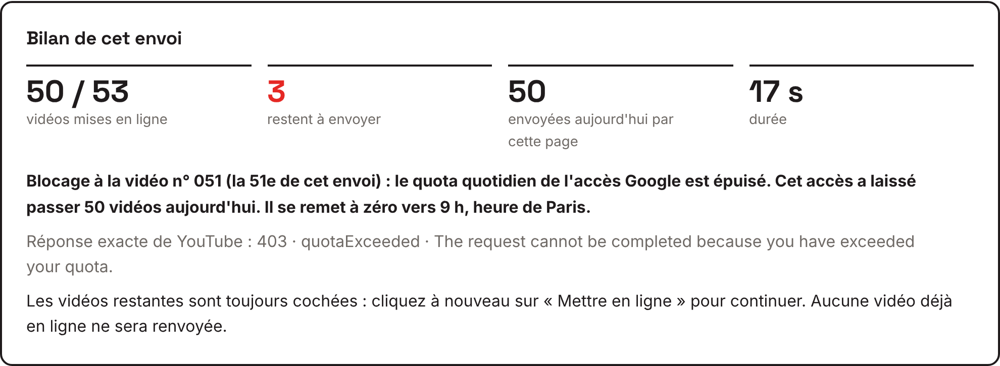

Le test en 5 étapes.
Comptez un quart d'heure la première fois. Faites-le sur un ordinateur, avec Chrome ou Edge.
Envie de voir l'outil avant ? Ouvrez la démonstration : elle fonctionne sans compte et n'envoie rien à YouTube.
Créer l'identifiant Google
Sans lui, aucune page n'a le droit d'agir sur votre chaîne. Il est gratuit.
- Ouvrez
console.cloud.google.comet créez un projet, par exemple « Festival ». - Menu API et services › Bibliothèque : cherchez YouTube Data API v3 et cliquez sur Activer.
- Menu Écran de consentement OAuth : choisissez Externe, donnez un nom, laissez sur Test, et ajoutez votre adresse Google dans Utilisateurs tests.
- Menu Identifiants › Créer des identifiants › ID client OAuth : choisissez Application Web.
- Dans Origines JavaScript autorisées, collez exactement :
https://viktor-guignard.github.io - Validez et copiez l'ID client. Il se termine par
.apps.googleusercontent.com.
Attention : il faut un « ID client OAuth », pas une « clé API ». Une clé API commence par AIza et ne permet pas d'envoyer de vidéo.
Google renomme parfois ces menus. Si un intitulé a changé, prenez le plus proche.
Choisir la chaîne
Le test envoie 53 fausses vidéos, en privé. Deux possibilités :
- Une chaîne à part : aucun risque pour la chaîne du festival, mais vous mesurez la limite de cette chaîne-là, pas celle du festival. Pour en créer une : sur YouTube, photo de profil › Changer de compte › Afficher toutes les chaînes › Créer une chaîne.
- La chaîne du festival : vous mesurez sa vraie limite quotidienne. Faites-le un jour où aucun vrai film n'est à mettre en ligne, et supprimez les vidéos d'essai ensuite.
Dans les deux cas, l'adresse Google du compte doit figurer dans les Utilisateurs tests (étape 1, point 3).
Télécharger le kit
53 fausses vidéos et leur tableau
Un fichier zip de 1,1 Mo. Chaque vidéo dure 10 secondes. Tout y est inventé.
Décompressez le zip. Vous obtenez un fichier films-test.xlsx et un dossier YOUTUBE.
Lancer le test
- Ouvrez l'outil. Collez l'ID client, cliquez sur Se connecter à YouTube et choisissez la chaîne voulue. Son nom s'affiche ensuite à l'étape 01 de l'outil.
- Cliquez sur Choisir le tableau… et prenez
films-test.xlsx. - Cliquez sur Choisir un dossier… et prenez le dossier
YOUTUBE. - Dans l'encadré noir, en haut de la page, cochez la case de confirmation.
- Cliquez sur Mettre en ligne 53 vidéos et laissez l'onglet ouvert.

Google affiche un avertissement à la connexion
C'est normal. Sur l'écran « Google n'a pas validé cette application », cliquez sur Paramètres avancés, puis sur Accéder à…, et acceptez les autorisations demandées.
Lire le résultat
À la fin, un bilan s'affiche sous le bouton.

- « Tout est passé » : aucune limite en dessous de 53 vidéos par jour.
- « Quota épuisé » : votre identifiant Google s'arrête à ce nombre de vidéos par jour. Recliquez le lendemain après 9 h : le reste partira, sans doublon.
- « Limite de la chaîne » : c'est YouTube qui plafonne cette chaîne. Réessayez 24 heures plus tard.
Puis trois gestes pour finir
- Testez la publication. En bas de l'outil, cochez une seule vidéo et cliquez sur Passer en public. Si elle reste privée, l'outil vous le dit : c'est un point important à signaler.
- Enregistrez le rapport. Dans l'encadré noir, cliquez sur Enregistrer le rapport de test. C'est le fichier à transmettre pour faire analyser le test.
- Supprimez les vidéos d'essai. En bas de l'outil, cochez la case tout en haut de la liste, puis cliquez sur Supprimer de YouTube.
Pour les vrais films
Même chose, avec vos fichiers :
- Connectez-vous à la chaîne du festival.
- Choisissez votre tableau, puis le dossier
YOUTUBEcréé par le programme de téléchargement. - Relisez l'aperçu : chaque vidéo est en face de son titre et de sa description.
- Envoyez d'abord 2 ou 3 vidéos, regardez-les sur YouTube, puis envoyez le reste.
- Passez-les en public quand vous les avez vérifiées.
Trois règles : ne triez pas et ne supprimez pas de lignes dans le tableau ; utilisez toujours le même navigateur sur le même ordinateur ; laissez l'onglet ouvert pendant l'envoi.
Les pannes les plus courantes
Google affiche « origin_mismatch » ou « redirect_uri_mismatch »
L'adresse du site n'est pas dans les « Origines JavaScript autorisées ». Reprenez le point 5 de l'étape 1, sans barre oblique à la fin, et attendez quelques minutes.
Google affiche « Accès bloqué » ou « access_denied »
Votre adresse Google n'est pas dans les « Utilisateurs tests ». Ajoutez-la (point 3 de l'étape 1).
La fenêtre de connexion Google ne s'ouvre pas
Le navigateur bloque les fenêtres surgissantes. Autorisez-les pour ce site, grâce à l'icône dans la barre d'adresse, puis recliquez.
L'outil dit que l'identifiant n'a pas la bonne forme
Vous avez probablement collé une clé API ou le code secret. Il faut l'ID client, qui se termine par .apps.googleusercontent.com.
Le bouton « Mettre en ligne » reste gris
Vérifiez trois choses : vous êtes connecté, des vidéos sont cochées dans l'aperçu, et la case de confirmation de l'encadré noir est cochée.
Une vidéo indique « Aucune ligne du tableau ne correspond »
Son nom ne commence pas par un numéro de ligne. Renommez le fichier sur le modèle « 007 - Titre », ou vérifiez que le bon tableau est chargé.
Autre chose ? Enregistrez le rapport de test : il contient la réponse exacte de YouTube.